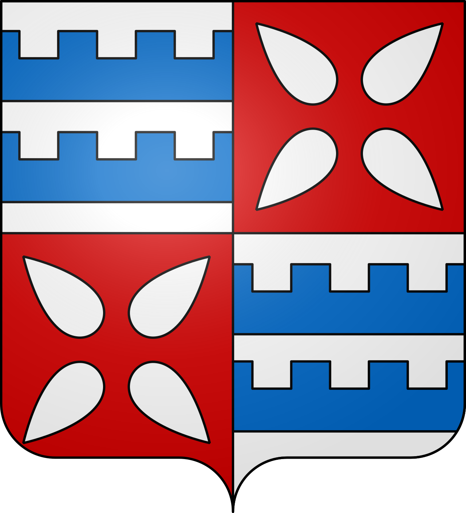

Muret
La Cité de
Clément Ader


⟹ Garonne · Bataille de 1213 · Aviation ⟸

Avant Muret : une terrasse au bord de la Garonne. La ville s'est installée sur la première terrasse de la rive gauche de la Garonne, au confluent de la Louge. Dès le Ier siècle de notre ère, des fours de briques gallo-romains fonctionnent sur la rive droite du fleuve : l'argile et l'eau font déjà de ce site un lieu d'activité.
Le castrum des comtes de Comminges. Au Moyen Âge, Muret (Murèth en gascon) se développe autour d'un château fort tenu par les comtes de Comminges. La ville, ceinte de remparts et reliée à l'autre rive par un pont, contrôle un passage stratégique sur la Garonne, à quelques heures de marche de Toulouse.
12 septembre 1213 : la bataille de Muret. En pleine croisade contre les Albigeois, le roi Pierre II d'Aragon, allié des comtes de Toulouse, de Foix et de Comminges, assiège Muret où s'est retranché Simon de Montfort. Malgré leur supériorité numérique, les coalisés occitans et catalano-aragonais sont mis en déroute et le roi d'Aragon est tué au combat.

Une bataille qui a dessiné l'Europe. Avec Las Navas de Tolosa (1212) et Bouvines (1214), Muret compte parmi les trois grandes batailles qui ont fixé les frontières de l'Europe occidentale : elle met fin au projet d'un grand ensemble politique à cheval sur les Pyrénées et ouvre la voie au rattachement du comté de Toulouse à la couronne de France.
Une petite capitale administrative et marchande. Après les guerres, Muret reste une ville de marché et de justice. La place du Mercadar, ancienne place aux Herbes, rappelle cette vocation commerçante, tandis que l'église Saint-Jacques, d'origine romane, reçoit au XIVe siècle son clocher octogonal de style gothique toulousain.
XVIe siècle : reliques, crypte et humanisme. En 1548, un chœur voûté est ajouté à l'église Saint-Jacques et une crypte est aménagée pour abriter les reliques de saint Germier. La même époque voit naître à Muret Marc-Antoine Muret (1526-1585), humaniste dont la renommée s'étend jusqu'à Rome.

XIXe siècle : le canal, le rail et les grands hommes. Le canal de Saint-Martory, long de plus de 70 km, irrigue la plaine toulousaine et traverse la commune. Muret voit naître le maréchal Adolphe Niel, futur ministre de la Guerre de Napoléon III, puis, en 1841, Clément Ader, le pionnier de l'aviation.
Clément Ader, l'enfant du pays. Ingénieur, inventeur du théâtrophone et passionné par le vol des oiseaux, Clément Ader fait décoller son Éole en 1890, s'arrachant brièvement du sol à bord d'un appareil motorisé. Il donne au monde le mot « avion ». Muret lui a consacré un parc, inscrit aux Monuments historiques, et un musée.
XXe siècle : de la sous-préfecture à l'agglomération. Sous-préfecture de la Haute-Garonne, Muret a été le fief électoral de Vincent Auriol, député puis premier président de la IVe République. La ville s'est depuis fortement développée dans l'aire toulousaine, tout en refusant de rejoindre Toulouse Métropole : elle est aujourd'hui le cœur du Muretain Agglo.

Une ville tournée vers son fleuve. La Garonne, classée Natura 2000, borde la commune au nord. Ses berges, ses ripisylves et ses zones naturelles protégées offrent un cadre de promenade apprécié, à deux pas du centre ancien.

Muret est une ville de passage devenue ville d'histoire : sur ses rives s'est joué en 1213 le destin du Midi, et de ses rues est parti, six siècles plus tard, le rêve de voler.
Repère synthétique — L'Âme des RégionsPour aller plus loin — sources et documentation :
• Ville de Muret
• Musée Clément Ader & les Grands Hommes — Tourisme Occitanie
• Église Saint-Jacques — Tourisme Occitanie
• Haute-Garonne Tourisme — sites et patrimoine
• Archives départementales de la Haute-Garonne
• INSEE — Muret
Clément Ader (1841-1925), père de l'aviation, Marc-Antoine Muret (1526-1585), humaniste, Nicolas Dalayrac (1753-1809), compositeur d'opéras-comiques, et le maréchal Adolphe Niel (1802-1869) sont les plus célèbres enfants de Muret. Vincent Auriol, président de la République de 1947 à 1954, en fut le député.
La mémoire de la bataille du 12 septembre 1213 reste vivante : la chapelle du Rosaire de l'église Saint-Jacques l'évoque, le musée lui consacre une place importante et la Société du Patrimoine du Muretain œuvre à la faire connaître.
Accès : Muret se trouve à environ 25 km au sud-ouest de Toulouse par l'A64. La gare est desservie par les TER de la ligne Toulouse–Tarbes, et le réseau Tisséo relie la ville à la métropole.
Musée : Le musée Clément Ader & les Grands Hommes est installé dans le centre historique, à proximité de l'église Saint-Jacques, à moins de 10 minutes à pied de la gare.
Conseil de visite : alternez centre ancien, musée et bords de Garonne ; histoire médiévale, épopée de l'aviation et nature fluviale résument l'identité de la ville.